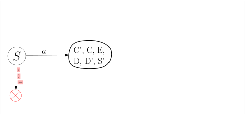
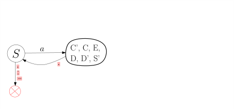
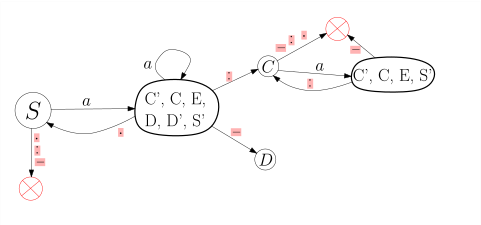
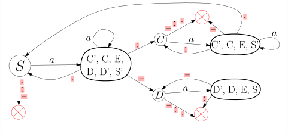

import Section from "~/components/Section";
import Paragraph from "~/components/Paragraph";
import Container from "~/components/Container";
import Carousel from "~/components/Carousel";
import NumberedTitle from "~/components/NumberedTitle";
const Article = () => {
  return (
    <Container>
      <Section
        count={24}
        title_gr="Von einer regulären Grammatik zu einem endlichen Automaten"
        title_en="regular grammar to fsm"
        number={4.4}
        counter="DefCtr"
        counter="ExoCtr"
        path="/lecture-notes24.tsx">
        <div id="link-to-toc">
          <a href="../vorlesungsskript">
            Inhaltsverzeichnis
          </a>
          <a href="04-03-nfsm">
            &lt;&lt; Kapitel 4.3
          </a>
        </div>
        <div
          id="link-to-overview"
          style="text-align: end">
          <a href="/">
            zur Kursübersicht
          </a>
          <a href="04-05-regular-expressions">
            Kapitel 4.5 &gt;&gt;
          </a>
        </div>
        <div id="rightSideWrapper">
          <div class="content">
            <div class="chapter">
              <div class="subChapter">
                <h1 class="hidden-title">
                  <span class="subChapterTitle">
                    4.4 
                    Von einer regulären Grammatik zu einem endlichen Automaten
                  </span>
                </h1>
                <Paragraph>
                  In diesem Unterkapitel wollen wir das Gelernte an einem konkreten Beispiel anwenden.
                  Wir beginnen (1) mit einer Beschreibung eines Formats in natürlicher Sprache; (2) basteln uns
                  daraus
                  mit Hilfe des "Baukastenprinzips" eine reguläre Sprache; (3) säubern diese, indem wir Regeln
                  der Form \(X \rightarrow Y\) und \(X \rightarrow a\) eliminieren; (4) bauen einen
                  nichtdeterministischen
                  endlichen Automaten; (5) transformieren diesen in einen deterministischen endlichen Automaten.
                </Paragraph>
                <h2>
                  1. Beschreibung des Formats in natürlicher Sprache
                </h2>
                <Paragraph>
                  Unsere Sprache \(L\) soll so ähnlich sein wie die der erlaubten Domainnamen, allerdings mit ein
                  paar Abänderungen,
                  um die obigen Transformationen spannender zu machen. Ein Wort in unserer Sprache besteht aus
                  einer
                  nichtleeren Folge von{" "}
                  <i>
                    Labels
                  </i>
                  {" "}die jeweils durch einen{" "}
                  <code>
                    .
                  </code>
                  {" "}separiert sind.
                  Jedes Label ist eine nichtleere Folge von Blöcken (ein nichtleerer String aus Buchstaben und
                  Zahlen), separiert
                  durch{" "}
                  <code>
                    :
                  </code>
                  {" "}oder{" "}
                  <code>
                    -
                  </code>
                  {" "}aber niemals durch beides innerhalb eines Blockes.
                  Also:
                </Paragraph>
                <div style="text-align:center">
                  {" "}{" "}
                  <code>
                    bla:bla:blue.xyz-12-zx.b:x:yyy:xxx:aaa
                  </code>
                  {" "}{" "}
                </div>
                ist ein Wort in \(L\), aber
                <div style="text-align:center">
                  {" "}{" "}
                  <code>
                    a:b-c.hello
                  </code>
                  {" "}{" "}
                </div>
                ist kein Wort in \(L\), da das erste Label die Separatoren{" "}
                <code>
                  :
                </code>
                {" "}und{" "}
                <code>
                  -
                </code>
                {" "}mischt.
                Habe ich
                \(L\) genau genug beschrieben? Stellen wir eine Meta-Frage: Was zählt überhaupt als{" "}
                <i>
                  genaue
                  Beschreibung
                </i>
                {" "}einer
                Sprache? Wir können uns dem Mund fusselig reden und Beispiele und Nicht-Beispiele angeben, am Ende
                aber werden
                wir irgendwann beginnen, formale Regeln aufzustellen, die unsere Sprache beschreiben - wir werden
                also im Prinzip
                eine{" "}
                <i>
                  Grammatik
                </i>
                {" "}schreiben. Tun wir dies also.
                <h2>
                  2. Eine reguläre Grammatik
                </h2>
                <Paragraph>
                  Beginnen wir mit dem Alphabet.
                  Da es 62 alphanumerische Zeichen gibt:{" "}
                  <code>
                    a..zA..Z0..9
                  </code>
                  {" "}und wir uns keine unnötige
                  Arbeit machen wollen,
                  beschränken wir uns auf ein Zeichen: `a`. Dazu kommen die Separatoren`:-.`. Also: \(\Sigma = \&#123;a,.,:,-\&#125;\). Stellen Sie sich einfach vor, \(a\) stehe
                  für beliebige alphanumerische Zeichen. Sowohl Grammatik als auch Automaten lassen sich einfach
                  anpassen.
                  Wir beginnen ganz unten und schreiben eine Grammatik für
                  Blöcke, also nichtleere Strings aus alphanumerischen Zeichen.
                </Paragraph>
                $$\begin&#123;align*&#125;
                B&amp;\rightarrow a \ | \ aB
                \end&#123;align*&#125;$$
                <Paragraph>
                  Als nächstes führen wir ein nichtterminales Symbole \(C\) für Labels mit{" "}
                  <code>
                    :
                  </code>
                  {" "}ein
                  und ein Nichtterminal \(D\) für Labels mit{" "}
                  <code>
                    -`. Wir wählen die Buchstaben \(C,D\),
                    weil`:
                  </code>
                  {" "}auf Englisch{" "}
                  <i>
                    colon
                  </i>
                  {" "}und{" "}
                  <code>
                    -
                  </code>
                  {" "}{" "}
                  <i>
                    dash
                  </i>
                  {" "}heißt.
                  \(C\)-Labels können wir uns nach dem Baukastenprizip bauen, in dem
                  wir{" "}
                  <a href="./04-01-regular-grammars#operation-L(.L)*">
                    &ensp;Theorem 4.1.14{" "}
                  </a>
                  &ensp;anwenden.
                  Wir fügen zur "End-Produktion" \(B \rightarrow a\) eine weiter Produktion \(B \rightarrow a:B\)
                  hinzu und
                  tun das gleiche für \(B \rightarrow b\). Allerdings benennen wir \(B\) in \(C\) um, damit keine
                  Verwechslungsgefahr mit
                  dem ursprünglichen \(B\) aufkommt. Das gleiche machen wir für \(D\).
                </Paragraph>
                $$\begin&#123;align*&#125;
                C&amp;\rightarrow a \ | \ aC \ | \ a&#123;:&#125;C \\
                D&amp;\rightarrow a \ | \ aD \ | \ a&#123;-&#125;D \\
                T&amp;\rightarrow C \ | D
                \end&#123;align*&#125;$$
                <Paragraph>
                  Von \(L\) lassen sich nun also alle Labels ableiten. Wir brauchen nun zum Schluss wieder
                  eine Folge von \(L\), mit{" "}
                  <code>
                    .
                  </code>
                  {" "}separiert, müssen also wieder
                  <a href="./04-01-regular-grammars#operation-L(.L)*">
                    &ensp;Theorem 4.1.14{" "}
                  </a>
                  &ensp;anwenden, dieses
                  mal auf die von \(T\) erzeugte Sprache. Im Ergebnis benennen wir das Startsymbol in \(S\) um.
                </Paragraph>
                $$\begin&#123;align*&#125;
                S&amp;\rightarrow C \ | \ D \\
                C&amp;\rightarrow a \ | \ aC \ | \ a&#123;:&#125;C \ | a&#123;.&#125;S \ \\
                D&amp;\rightarrow a \ | \ aD \ | \ a\text&#123;-&#125;D \ | \ a&#123;.&#125;S \\
                \end&#123;align*&#125;$$
                <Paragraph>
                  Um eine "richtig" reguläre Sprache zu erhalten, entzerren wir die erweitert regulären
                  Produktionen
                  wie \(C \rightarrow a&#123;:&#125;C\). Dafür brauchen wir neue Symbole \(C', D', S'\):
                </Paragraph>
                $$\begin&#123;align*&#125;
                S&amp;\rightarrow C \ | \ D \\
                C&amp;\rightarrow a \ | \ aC \ | \ aC'\ | \ aS' \\
                C'&amp;\rightarrow &#123;:&#125;C \\
                D&amp;\rightarrow a \ | \ aD \ | \ a D' \ | \ aS' \\
                D'&amp;\rightarrow \text&#123;-&#125;D \\
                S'&amp;\rightarrow &#123;.&#125;S
                \end&#123;align*&#125;$$
                <h2>
                  3. Die reguläre Grammatik säubern
                </h2>
                <Paragraph>
                  Wir wollen nun alle Produktionen der Form \(Y \rightarrow x\) eliminieren. Hierfür nehmen wir
                  uns
                  <i>
                    ein
                  </i>
                  {" "}neues Nichtterminal \(E\) und ersetzen \(Y \rightarrow x\) durch \(Y \rightarrow
                  xE\)
                  und fügen die Produktion \(E \rightarrow \epsilon\) hinzu.
                </Paragraph>
                $$\begin&#123;align*&#125;
                S&amp;\rightarrow C \ | \ D \\
                C&amp;\rightarrow aE \ | \ aC \ | \ aC'\ | \ aS' \\
                C'&amp;\rightarrow &#123;:&#125;C \\
                D&amp;\rightarrow aE \ | \ aD \ | \ a D' \ | \ aS' \\
                D'&amp;\rightarrow \text&#123;-&#125;D \\
                S'&amp;\rightarrow &#123;.&#125;S \\
                E&amp;\rightarrow \epsilon
                \end&#123;align*&#125;$$
                <Paragraph>
                  In einem zweiten Schritt wollen wir die Produktionen \(S \rightarrow C\) und \(S \rightarrow D\)
                  eliminieren,
                  sodass wir nur noch Produktionen der From \(X \rightarrow aY\) und \(E \rightarrow \epsilon\)
                  haben.
                  Wir gehen vor wie in{" "}
                  <a href="./04-01-regular-grammars#theorem-regular-simplified">
                    &ensp;Theorem
                    4.1.7{" "}
                  </a>
                  &ensp;beschrieben.
                  Wir ersetzen \(S \rightarrow C\) also durch alle Produktionen der Form \(S \rightarrow \alpha\),
                  wobei
                  \(\alpha\) eine Wortform ist, die sich aus \(C\) ableiten lässt und nicht nur aus einem
                  einzelnen Nichtterminal
                  besteht; dies trifft glücklicherweise auf{" "}
                  <i>
                    alle
                  </i>
                  {" "}rechten Seiten der \(C\)-Produktionen
                  zu; gleiches gilt
                  für \(D\). Wir erhalten:
                </Paragraph>
                $$\begin&#123;align*&#125;
                S&amp;\rightarrow aE \ | \ aC \ | \ aC'\ | \ aS' \ | \ aD \ | \ a D' \\
                C&amp;\rightarrow aE \ | \ aC \ | \ aC'\ | \ aS' \ \\
                C'&amp;\rightarrow &#123;:&#125;C \\
                D&amp;\rightarrow aE \ | \ aD \ | \ a D' \ | \ aS' \ \\
                D'&amp;\rightarrow \text&#123;-&#125;D \\
                S'&amp;\rightarrow &#123;.&#125;S \\
                E&amp;\rightarrow \epsilon
                \end&#123;align*&#125;$$
                <h2>
                  4. Einen nichtdeterministischen endlichen Automaten bauen
                </h2>
                <Paragraph>
                  Dies sollte nun einfach sein. Wir erschaffen Zustände \(S, C, C', D, D', S', E\) und
                  übersetzen jeden Grammatik-Pfeil in einen Automaten-Pfeil.
                </Paragraph>
                <figure>
                  
                </figure>
                <Paragraph>
                  Ich habe die Zeichen{" "}
                  <code>
                    .:-
                  </code>
                  {" "}rot unterlegt, weil man sie sonst kaum erkennen würde in
                  dem Automaten.
                </Paragraph>
                <h2>
                  5. Den nichtdeterministischen Automaten in einen deterministischen umwandeln
                </h2>
                <Paragraph>
                  Unser nichtdeterministischer endlicher Automat hat Zustandsmenge \(Q = \&#123;S, S', C, C', D, D',
                  E\&#125;\), also insgesamt
                  sieben Zustände. Wenn wir genau nach Buch vorgingen, müssten wir den endlichen Automaten auf der
                  Zustandsmenge \(2^Q\)
                  definieren, er hätte also \(2^7 = 128\) viele Zustände. Das wäre jetzt für einen Rechner kein
                  Problem, aber
                  in diesem vorlesungsskript doch etwas ungünstig.
                  Wir gehen{" "}
                  <i>
                    lazy
                  </i>
                  {" "}vor, erschaffen Zustände in \(2^Q\) also nur dann, wenn wir sie
                  brauchen.
                  Wir beginnen mit dem Zustand \(\&#123;S\&#125;\) und legen dann an jeden Zustand Kanten an, jeweils mit
                  \(a, :, -, . \) beschriftet, und erschaffen, falls nötig, dabei neue Zustände. In der folgenden
                  Animation
                  sehen Sie manchmal den mit einem Kreuz markierten Fehlerzustand (trap state). Die akzeptierenden
                  Zustände sind mit fettem Rand markiert.
                </Paragraph>
                <figure
                  id="figure-ColonDashPeriod"
                  class="centered-figure well">
                  <div>
                    <Paragraph>
                      Der nichtdeterministische Automat
                    </Paragraph>
                    
                  </div>
                  <Carousel>
                    
                    
                    
                    
                    
                    
                    
                    
                    
                    
                    
                    
                    
                    
                    
                    
                    
                    
                    
                    
                    
                    
                    
                    
                    
                    
                    
                  </Carousel>
                </figure>
                <Paragraph>
                  Dieser Automat hat deutlich weniger also 128 Zustände, nämlich mit nur sieben genau so
                  viele wie der nichtdeterministische (es ist Zufall, dass beide gleich viele Zustände haben;
                  messen
                  Sie dieser Tatsache keine Bedeutung bei). Wir könnten nun von diesem Automaten ausgehend
                  wiederum eine reguläre Grammtik bauen, die in diesem Falle sogar einfacher und klarer
                  wäre als die ursprüngliche. Wenn wir erweitert reguläre Grammatiken erlauben, so können
                  wir den deterministischen Automaten besonders konzise in eine Grammatik fassen:
                </Paragraph>
                $$\begin&#123;align*&#125;
                S&amp;\rightarrow aT \\
                T&amp;\rightarrow &#123;.&#125;S \ | \ aT \ | \ &#123;:&#125;aC \ | \ \text&#123;-&#125;a D \\
                C&amp;\rightarrow aC \ | \ &#123;:&#125;aC \ | \ &#123;.&#125;S \\
                D&amp;\rightarrow aD \ | \ \text&#123;-&#125;aD \ | \ &#123;.&#125;S
                \end&#123;align*&#125;$$
                <Paragraph>
                  Die Zustände des deterministischen Automaten beschreiben im Prinzip das, was wir uns merken
                  müssen, wenn wir so einen String "parsen": Zustand \( \&#123;C',C,E,D,D',S'\&#125;\), der
                  in der Grammatik dann zum Nichtterminal \(T\) wird, bedeutet beispielsweise
                  <i>
                    das Label hat schon begonnen, wir wissen aber noch nicht, ob es eines mit`:` oder eines mit{" "}
                    <code>
                      -
                    </code>
                    {" "}ist.
                    Der Zustand \(\&#123;C',C,E,S'\&#125;\) bzw. das Nichtterminal \(C\) heißt dann`:`
                  </i>
                  wir sind innerhalb eines Labels mit 
                  {" "}
                  <i>
                    .
                  </i>
                  {" "}{" "}
                </Paragraph>
                <div class="well well-lg numbered-exercise container">
                  <Paragraph>
                    <span class="numbered-title">
                      Übungsaufgabe
                      <NumberedTitle>
                        &ensp;4.4.1{" "}
                      </NumberedTitle>
                    </span>
                    Erinnern Sie sich an{" "}
                    <a href="./04-03-nfsm#exercise-divisibility">
                      &ensp;Aufgabe 4.3.1{" "}
                    </a>
                    . Hier
                    sehen
                    Sie einen nichtdeterministischen endlichen Automaten für die Sprache \(L_4 \cup L_6\), also
                    die Sprache aller Wörter \(1^n\) für ein \(n\), das durch 4 oder 6 teilbar ist.
                    Da unser Alphabet \(\Sigma = \&#123;1\&#125;\) eh nur aus einem Zeichen besteht, habe ich auf die
                    Beschriftung
                    der Kanten verzichtet.
                  </Paragraph>
                  <figure>
                    
                  </figure>
                  <Paragraph>
                    Dieser Automat hat 11 Zustände. Sein Potenzmengenautomat hätte also \(2^&#123;11&#125; = 2048\)
                    Zustände.
                    Führen Sie die Konstruktion{" "}
                    <i>
                      lazy
                    </i>
                    {" "}durch, indem Sie vom Startzustand \(\&#123;S\&#125;\)
                    ausgehend die Folgezustände konstruieren. Wieviele Zustände bekommen Sie?
                  </Paragraph>
                </div>
              </div>
            </div>
          </div>
        </div>
      </Section>
    </Container>
  );
};

export default Article;